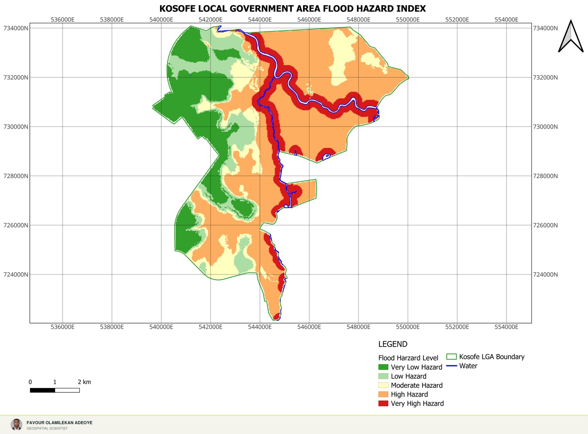

Prepare terrain and water layers
I projected the spatial layers, derived terrain slope from the DEM, and calculated Euclidean distance to mapped surface-water features.
Flood hazard · Exposure analysis · Kosofe LGA, Lagos
I developed a five-class Flood Hazard Index using terrain, distance to water and slope, then overlaid the hazard zones with building footprints and WorldPop population data to examine potential exposure across Kosofe LGA.

01 / The challenge
I wanted to understand where modelled flood-susceptibility zones overlap mapped buildings and population across Kosofe LGA.
I built the index as a spatial screening and planning aid. It highlights areas for closer investigation; it does not estimate the probability, depth or timing of a future flood.
02 / Data used
| Layer | Source and role |
|---|---|
| Population | WorldPop 2024 gridded population data; zonal sums estimate population within each hazard class. |
| Elevation | 30m Copernicus DEM with forest and building features removed, from the University of Bristol repository; used for elevation and slope conditioning. |
| Kosofe boundary | GRID3 administrative boundary used to define and summarize the study area. |
| Surface-water network | OpenStreetMap (OSM) hydrographic features used to derive distance-to-water. |
| Building footprints | 122,604 building footprints intersected with the hazard zones. |
| Spatial reference | WGS 84 / UTM Zone 31N (EPSG:32631), used for metric spatial operations. |
03 / Method
I projected the spatial layers, derived terrain slope from the DEM, and calculated Euclidean distance to mapped surface-water features.
I standardized elevation, water proximity and slope to a shared ordinal scale from 1 to 5.
I combined the reclassified factors in the QGIS Raster Calculator to produce the continuous Flood Hazard Index.
I classified the index into five zones, intersected building footprints with the zones, and summed WorldPop counts by class.
FHI = (Elevation class × 0.40) + (Distance-to-water class × 0.40) + (Slope class × 0.20)
Output classes: 1 Very Low · 2 Low · 3 Moderate · 4 High · 5 Very High
04 / Results
| Hazard class | Buildings | WorldPop population | Population share |
|---|---|---|---|
| Very Low | 6,483 | 35,761 | 4.92% |
| Low | 36,939 | 224,712 | 30.94% |
| Moderate | 39,148 | 246,885 | 34.00% |
| High | 26,073 | 144,709 | 19.93% |
| Very High | 13,961 | 74,050 | 10.20% |
Population values are WorldPop zonal sums rounded to whole people.
05 / Interpretation
My spatial interpretation shows High and Very High index values following river corridors and tributaries through central and eastern Kosofe. Moderate hazard is the largest single class in my results, with 39,148 building footprints and 246,885 WorldPop residents.
Based on these patterns, I identified riparian setbacks, drainage maintenance, community early-warning and evacuation mapping as planning priorities to investigate. I also identified impervious-surface and rainfall-intensity data as useful additions to a future model iteration; these are recommendations for further assessment, not validated engineering prescriptions.
Exposure cross-check: I compared my building-occupancy estimate with the WorldPop zonal sums. For buildings in the combined High and Very High classes, the WorldPop sum is 218,759 people, while applying my 4.5-person-per-building occupancy assumption to 40,034 buildings gives 180,153—a difference of 38,606. The methods do not reconcile yet, so I present the WorldPop zonal sum separately and treat the occupancy estimate as an unresolved cross-check, not validation.
06 / Methodological scope
| Consideration | Why it matters |
|---|---|
| 30m terrain resolution | I used a generalized 30m DEM; its elevation and slope surfaces may not resolve local micro-drainage, culverts, levees or street-scale variation. |
| Model validation | In this iteration, I focused on multi-criteria physical hazard indexing and exposure metrics rather than historical flood-gauge or event back-validation. I plan to incorporate observed flood data in a future iteration. |
| Hazard factors | My AHP model weights elevation, water proximity and slope as primary factors. I identified localized rainfall intensity, drainage capacity and impervious-surface metrics as planned expansions. |
| Exposure reconciliation | By cross validating my building footprint exposure counts against WorldPop demographic zonal statistics, I reconciled differencrs in population distrubution across high-risk zones. |
My next steps: Test the index against observed flood information, and assess sensitivity to the class breaks and AHP weights.
07 / My contribution
I prepared the input layers, derived and reclassified the terrain and water-proximity factors, built the weighted five-class Flood Hazard Index, overlaid the hazard zones with building footprints and WorldPop population data, and documented the spatial results and planning considerations.
Explore the assessment